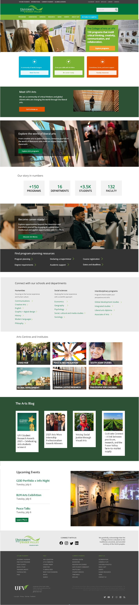
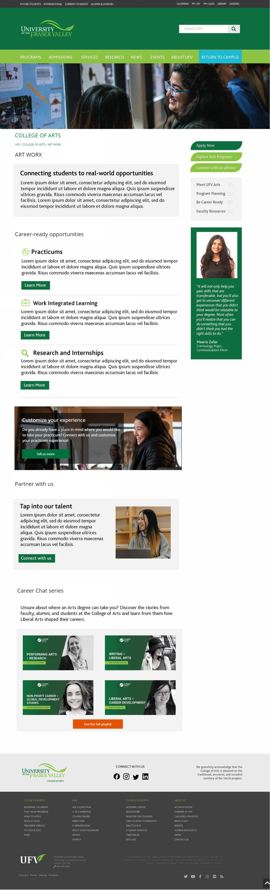
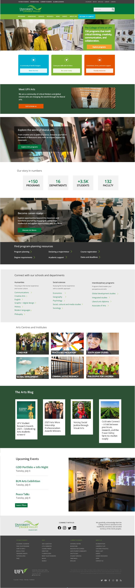
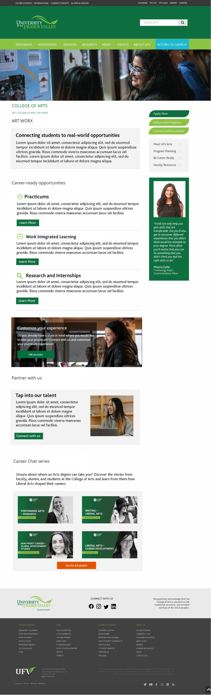

Can we create one content type that will go edge-to-edge on the full-width layout and then full column width on a typical inner-page layout?
ct-hero-cta.html
<section class="section-hero-full">
<div class="ct-hero-cta">
<div class="container">
<div class="row">
<div class="col-md-6 col-lg-push-6 col-banner"></div>
<div class="col-md-6 uc1 col-lg-pull-6 vcenter col-content">
<h1>Customize Your Experience</h1>
<p>Do you already have a place in mind where you would like to take your practicum? Connect with us and
customize your practicum experience!</p>
<a href="" alt="Tell Us More"><button class="btn-change">Tell Us More</button></a>
</div>
</div>
</div>
</div>
</section>
<!-- ct-hero-cta -->
<section class="section-hero-2col">
<div class="ct-hero-cta hero-2col">
<div class="container">
<div class="row">
<div class="col-md-6 col-lg-push-6 col-banner"></div>
<div class="col-md-6 uc1 col-lg-pull-6 vcenter col-content">
<h1>Customize Your Experience</h1>
<p>Do you already have a place in mind where you would like to take your practicum? Connect with us and
customize your practicum experience!</p>
<button class="btn-change">Tell Us More</button>
</div>
</div>
</div>
</div>
</section>
<!-- / ct-hero-cta -->
Needs:
On mobile:


 


